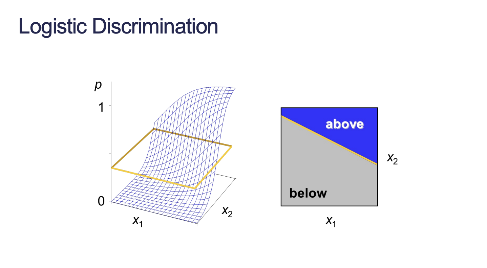
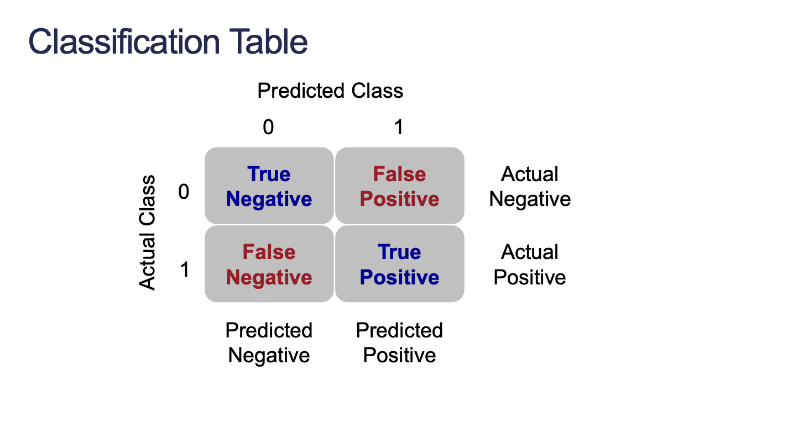
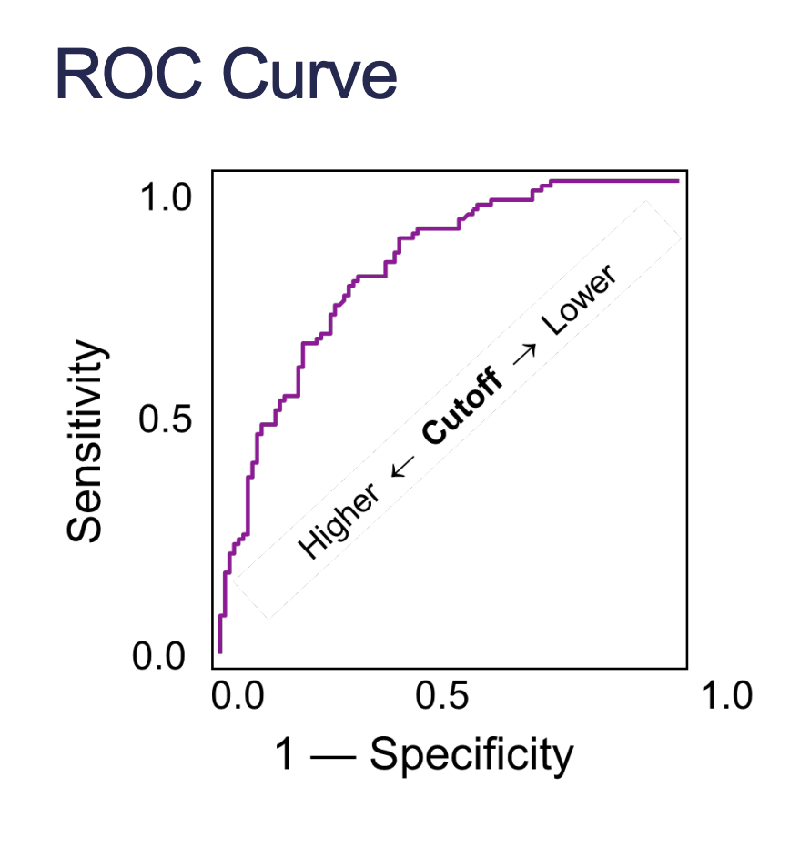
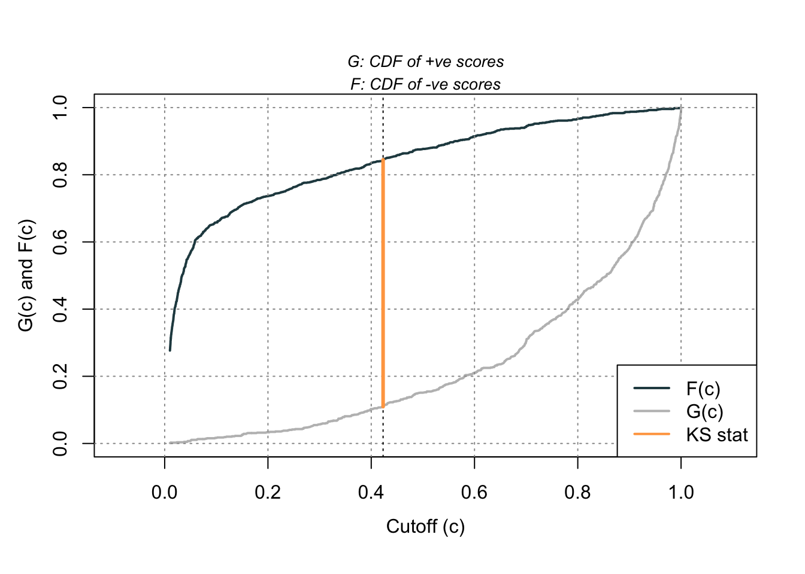

Logistic regression was originally designed to rank-order probabilities. It can be used as a classification model as well.
You might want that insight into rank-ordering than you might think. An example is when customers are predicted to buy a product but in reality that are on the fence.
3.1 Discrimination vs. Calibration
Discrimination is the ability to separate the events from the non-events. How good is a model at distinguishing the 1’s from the 0’s.
Calibration is how well predicted probabilities agree with the actual frequency of the outcomes. Are predicted probabilities systematically too low or too high? This is used when we care about if the probability output reflects the actual probability of an occurrence.
These two metrics may not agree with each other.
3.2 Coefficient of Discrimination
Coefficient of determination is the difference in average predicted probability between 1’s and 0’s:
\[
D = \bar{\hat{p}}_1 - \bar{\hat{p}}_0
\]
This is a comparison metric to see which model can separate the 1’s and 0’s better.
How well does a model order predictions? Recall concordance. For a pair of subjects with and without the event, the one with the event had the higher predicted probability.
Discordance is where for a pair of subjects with and without the event, the one with the event had the lower predicted probability.
3.3.1 Concordance
Interpretation: For all possible (1, 0) pairs, the model assigned the higher predicted probability to the observation with the event \(Concordance\%\) of the time.
C Dxy n Missing
0.9428394 0.8856789 2051.0000000 0.0000000
Our model assigned the higher predicted probability to the observation with the bonus eligible home 94.3% of the time (c-statistic).
4 Assessing Predictive Power
We want our model to correctly classify events and non-events. Classification forces the model to predict either 1 or 0 based on whether the predicted probability exceeds some threshold.
Strict classification-based measures completely discard any information about the actual quality of the model’s predicted probablities.

Logistic Discrimination

Classification Table
4.1 Sensitivity vs. Specificity
Of all the actual 1’s how many did you get right (sensitivity):
\[
TPR = \frac{TP}{TP + FN}
\]
Of all the actual 0’s how many did you get right (specificity):
\[
TNR = \frac{TN}{TN + FP}
\]
When we raise the cutoff, we make our model more specific. When we lower the cutoff, we make our model more sensitive.
Always consider the cost of false positives and false negatives when doing classification. When NOT considering costs, there are different techniques to “optimize” cut-off.
We can use the ROCit library to calculate different metrics between our predictions and actual values. We will calculate accuracy (ACC), sensitivity (SENS), and specificity (SPEC).
We could calculate the Youden index for every cutoff, but we can also use the rocit function to calculate the optimal Youden index. The plot shown is the ROC curve which is covered next.
value FPR TPR cutoff
0.7352326 0.1552436 0.8904762 0.4229724
4.1.2 ROC Curve

ROC Curve
The ROC curve plots sensitivity (TPR) vs. 1 - specificity (FPR) for different cutoff thresholds. In essence, we are trying to balance sensitivity and specificity. The “best” ROC curve is one that reaches the upper left hand side as the model would have high levels of sensitivity and specificity. The worst ROC curve is the diagonal line as the model would be just as good randomly assigning events and non-events to our observations.
The lower left hand side is predicting every observation is a 0. Specificity is high, but sensitivity is 0. The upper right hand side is predicting every observation is a 1. Sensitivity is high, but specificity is 0.
Area under the curve (AUC or AUROC) summarizes the overall quality of ROC curve. Mathematically, AUC is equivalent to the \(c\)-statistic. AUC curves can be a useful metric in comparing models, but they do not necessarily detail how good the model itself is.
We can get the calculated AUC through the summary:
Code
summary(logit_roc)
Method used: empirical
Number of positive(s): 840
Number of negative(s): 1211
Area under curve: 0.9428
4.1.3 KS Statistic
The KS statistic is a popular metric in the finance and banking industry. The two-sample KS statistic determines whether there is a difference between two cumulative distribution functions.
In binary classification, the KS statistic is the maximum distance between the distribution functions for the event and non-event groups. The point at which this max distance occurs is the optimal cut-off for the model.
Remember that this is assuming that the cost for each observation is the same. You should ask the business what costs drive the cut-off decision rather than always select the mathematically optimal cut-off.
To plot the two cumulative distribution functions as well as the maximum distance between the two CDFs we can use ksplot:
Code
logit_ks <-ksplot(logit_roc)

Code
logit_ks$"KS Cutoff"
[1] 0.4229724
4.1.4 KS-Statistic or Youden?
\(D\) test statistic is used for model comparison. However, it is mathematically equivalent to Youden’s J statistic. The point at which we have the maximum \(D\) statistic is the optimal cutoff.
4.2 Precision vs. Recall
In a precision-recall perspective, our focus is on the 1’s.
Recall is the same as sensitivity:
\[
TPR = \frac{TP}{TP + FN}
\]
Precision is slightly different than specificity:
\[
PPV = \frac{TP}{TP + FP}
\]
4.3 Best Cut-off?
Always consider the cost of false positives and false negatives when doing classification.
When not considering costs, many different techniques to “optimize” cutoff.
Common calculation in marketing. Great for interpretation around validity of model ranking / classifying observations correctly.
\[
\text{Lift} = \frac{PPV}{\pi_1}
\]
\(\pi_1\) is the proportion of 1’s in your original population
The top depth% of your customers, based on predicted probability, you get lift times as many responses compared to targeting a random sample of depth% of your customers.
Bucket 1 contains the top 10% of homes in terms of probability of being bonus eligible. Bucket 10 contains the 10% of homes with the lowest probabilities. The lift amount in the first row represents how much higher our model is able to predict bonus eligible homes than if you were to randomly select from 10% of the population. Response rate (RespRate) is the proportion of responses the model was able to correctly predict.
Cumulative lift (CLift) on the second row is saying our model is able to predict bonus eligible homes at a 2.32 higher rate than if you were to randomly select from 20% of the population.
CCapRate refers to how many 1’s we captured within the top \(k\%\) of the data. For example, bucket 1 captured 24% of the 1’s in the data.
4.5 Accuracy and Error
Be careful selecting models based on accuracy and error. If your data has 10% events and 90% non-events then you can have a 90% accurate model by guessing non-events for every observation.
Classification is a decision that is outside of statistical modeling. Classification assumes cost for each individual is the same. Useful for groups, but be careful about single observation decisions.